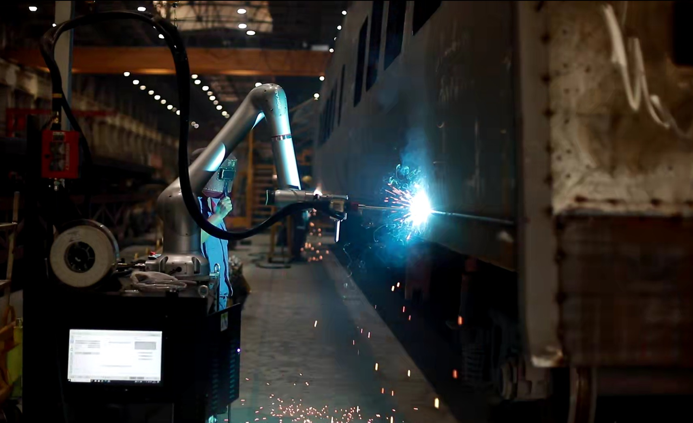
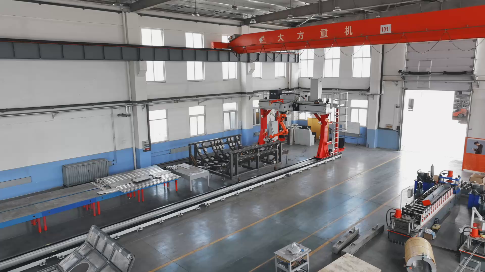

工厂自动化整体方案
机器人集成、机械设备控制、上位系统与生产管理支持。
TANGSHAN HEQI TECHNOLOGY · 2026
从工厂自动化整体方案，到焊接装备与项目技术服务。赫启科技以机械、电气与信息技术的协同，让设备真正服务于生产。
探索业务能力 ↓
01 / 关于赫启
唐山赫启科技有限公司位于唐山市高新区机器人特色产业基地，是一家以高新技术为主导的现代化民营企业。
公司以工厂自动化整体解决方案为主项，围绕工业机器人集成应用、机械设备控制、自动化上位系统、环保再生设备等技术开展工程设计与技术支持。
“实事求是，精益求精，不逐浮利。”
02 / 我们做什么
销售与技术紧密配合，先理解生产线与设备，再给出可实施的改造范围与服务边界。
机器人集成、机械设备控制、上位系统与生产管理支持。
变位机、工装卡具、行走装置、工作站房间与成套产线。
从前期技术交流、现场调查到施工调试与后期跟踪。
03 / 项目案例
项目展示覆盖轨道交通、军工、制氢、特高压与风电等行业。

CASE 01 · 轨道交通
围绕焊接工作站、行走装置与工装的协同设计，覆盖机械结构、运动控制与现场调试。
面向轨道车辆部件焊接的移动与协作方案。
从结构设计到工装制造，支持复杂部件的稳定装配。
移动式检测装备与数据化管理方向的项目展示。
04 / 交付方式
理解客户需求、生产线构成与设备动作。
只调查确实需要改造的项目，减少无效工时。
核对设备匹配、互锁关系与动作确认。
05 / 联系赫启
欢迎围绕生产线、焊接装备、工装或检测设备交流需求。
发起技术交流 ↗公开信息仅用于企业介绍。营业执照、合同、图纸及其他内部资料未上传。